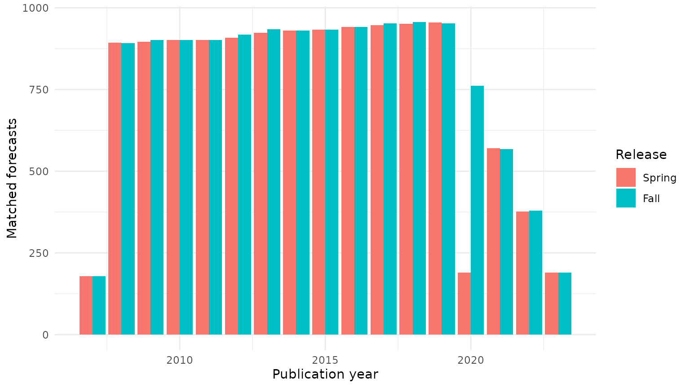
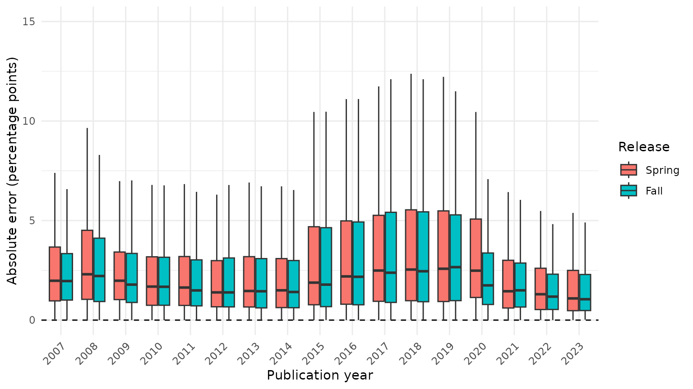

How Accurate Are IMF Growth Forecasts?
Source:vignettes/articles/imf-weo-forecast-errors.Rmd
imf-weo-forecast-errors.RmdThe question
How well does the International Monetary Fund (IMF) predict real GDP growth, and does forecast accuracy change when the prediction is made further in advance? Forecast quality matters because governments, businesses, and researchers use the IMF’s World Economic Outlook (WEO) to inform decisions. Earlier evaluations include Timmermann (2007) and Genberg and Martinez (2014).
This article uses econdatasets::ed_get() to download WEO
vintages, match forecasts to the latest available estimates of growth,
and describe absolute forecast errors at horizons of one to five years.
The exercise measures accuracy, not whether forecasts
systematically over- or underestimate growth: taking absolute values
removes the direction of the error.
Download the WEO data
Each WEO vintage is identified by its publication year and release
(Spring or Fall). We request only the columns needed for this analysis,
because the underlying economic_outlook table is large. We
then keep the real GDP growth series (NGDP_RPCH), country
identifiers with three uppercase letters, and nonmissing values.
Filtering by the series identifier avoids problems caused by changes in
variable labels over time.
library(econdatasets)
library(dplyr)
library(forcats)
library(ggplot2)
library(fixest)
weo <- ed_get(
"imfweo",
"economic_outlook",
columns = c(
"entity_id",
"entity_name",
"series_id",
"year",
"value",
"publication_year",
"publication_release"
),
quiet = TRUE
)
growth <- weo |>
filter(
series_id == "NGDP_RPCH",
grepl("^[A-Z]{3}$", entity_id),
!is.na(value)
) |>
mutate(
release_order = if_else(publication_release == "Fall", 1L, 0L),
vintage_key = 2L * publication_year + release_order
) |>
select(-series_id, -release_order)The three-letter country-code restriction drops regional and world
aggregates, whose numeric identifiers are not consistently padded across
vintages. vintage_key orders Spring before Fall within each
year.
Match forecasts with outcomes
For each country and target year, we use the GDP-growth value reported in the most recent WEO vintage as the comparison outcome. A forecast’s horizon is the target year minus its publication year: a 2020 release forecasting 2023 growth has a three-year horizon. We retain horizons from one through five years, and exclude target years less than two years before the latest publication year so that the comparison outcomes have had some time to mature.
latest_vintage <- growth |>
filter(vintage_key == max(vintage_key)) |>
distinct(publication_year, publication_release)
actuals <- growth |>
filter(vintage_key == max(vintage_key)) |>
select(entity_id, year, actual = value)
eligible <- growth |>
mutate(horizon = year - publication_year) |>
filter(
between(horizon, 1, 5),
year <= latest_vintage$publication_year - 2
)
unmatched_forecasts <- eligible |>
anti_join(actuals, join_by(entity_id, year))
unmatched <- nrow(unmatched_forecasts)
unmatched_examples <- unmatched_forecasts |>
distinct(entity_id, entity_name) |>
arrange(entity_id) |>
slice_head(n = 5)
predictions <- eligible |>
inner_join(
actuals,
join_by(entity_id, year),
relationship = "many-to-one"
) |>
transmute(
entity_id,
entity_name,
year,
publication_year,
publication_release = factor(
publication_release,
levels = c("Spring", "Fall")
),
vintage = fct_reorder(
paste(publication_year, publication_release),
vintage_key
),
horizon,
forecast = value,
actual,
forecast_error = abs(actual - forecast)
)The join excludes 239 eligible forecasts because their country-year pairs have no outcome in the latest vintage. Examples of affected countries include Eritrea (ERI), Syrian Arab Republic (SYR), Kosovo (UVK), Yemen, Republic of (YEM), Republic of Yemen (YEM). This is a missing country-year match, not necessarily evidence that a country no longer exists; differences in historical coverage can also produce missing outcomes.
The absolute forecast error is abs(actual - forecast),
measured in percentage points of real GDP growth. For
example, a forecast of 3% and an outcome of 1% imply an absolute error
of 2 percentage points. The latest vintage is a useful, consistently
defined benchmark, but its historical growth figures may still be
revised; they are not immutable final outcomes.
Describe the sample
We first count the country-forecast observations, the countries represented, the publication vintages, and the target-year range. Multiple releases and forecast horizons can contribute observations for the same country and target year, so these are not independent country-year observations.
sample_summary <- predictions |>
summarize(
observations = n(),
countries = n_distinct(entity_id),
vintages = n_distinct(vintage),
target_years = paste(range(year), collapse = "-")
)
knitr::kable(sample_summary, caption = "Forecast sample")| observations | countries | vintages | target_years |
|---|---|---|---|
| 25779 | 195 | 34 | 2008-2024 |
The analysis contains 25,779 forecasts for 195 countries across 34 vintages. It covers target years 2008-2024; these counts describe the matched sample rather than every observation in the downloaded WEO table.
summarize_variable <- function(x) {
tibble::tibble(
n = sum(!is.na(x)),
mean = mean(x, na.rm = TRUE),
sd = sd(x, na.rm = TRUE),
q05 = quantile(x, 0.05, na.rm = TRUE),
q25 = quantile(x, 0.25, na.rm = TRUE),
median = median(x, na.rm = TRUE),
q75 = quantile(x, 0.75, na.rm = TRUE),
q95 = quantile(x, 0.95, na.rm = TRUE)
)
}
descriptive_stats <- bind_rows(
forecast = summarize_variable(predictions$forecast),
actual = summarize_variable(predictions$actual),
forecast_error = summarize_variable(predictions$forecast_error),
.id = "variable"
)
knitr::kable(
descriptive_stats,
digits = 2,
caption = "Distribution of forecasts, outcomes, and absolute errors"
)| variable | n | mean | sd | q05 | q25 | median | q75 | q95 |
|---|---|---|---|---|---|---|---|---|
| forecast | 25779 | 4.11 | 2.89 | 1.14 | 2.50 | 3.86 | 5.32 | 7.61 |
| actual | 25779 | 2.94 | 5.78 | -4.86 | 1.18 | 3.29 | 5.31 | 8.91 |
| forecast_error | 25779 | 3.22 | 4.83 | 0.14 | 0.76 | 1.80 | 3.87 | 10.36 |
The median absolute error is 1.8 percentage points; the 95th percentile is 10.36 percentage points. The difference indicates that some forecasts miss the latest growth estimate by substantially more than a typical forecast. The signed forecast and actual growth rates can be negative, but absolute forecast errors cannot.
How does coverage vary by vintage?
predictions |>
group_by(publication_year, publication_release) |>
summarize(n = n(), .groups = "drop") |>
ggplot(aes(x = publication_year, y = n, fill = publication_release)) +
geom_col(position = position_dodge(width = 0.9)) +
scale_fill_discrete(limits = c("Spring", "Fall")) +
labs(
x = "Publication year",
y = "Matched forecasts",
fill = "Release"
) +
theme_minimal()
Number of matched forecasts by publication year and release.
The side-by-side bars, ordered Spring then Fall, show the contribution of each vintage to the final sample. The counts need not be equal: coverage differs across vintages, and recent publications have fewer eligible future target years under the two-year cutoff. These differences in sample composition matter when comparing forecast errors across publication years.
How large are errors at different horizons?
The following table reports the mean absolute error (MAE) and median absolute error separately for each horizon. This directly addresses whether the IMF’s forecasts become less accurate further into the future, while keeping in mind that each horizon may cover a different mix of years and countries.
horizon_summary <- predictions |>
group_by(horizon) |>
summarize(
observations = n(),
mean_absolute_error = mean(forecast_error),
median_absolute_error = median(forecast_error),
.groups = "drop"
)
knitr::kable(
horizon_summary,
digits = 2,
caption = "Absolute forecast errors by horizon (percentage points)"
)| horizon | observations | mean_absolute_error | median_absolute_error |
|---|---|---|---|
| 1 | 6324 | 3.06 | 1.70 |
| 2 | 5388 | 3.16 | 1.75 |
| 3 | 5007 | 3.25 | 1.81 |
| 4 | 4626 | 3.37 | 1.90 |
| 5 | 4434 | 3.35 | 1.90 |
The mean absolute error is 3.06 percentage points at the one-year horizon and 3.35 at the five-year horizon. Their difference (five-year minus one-year) is 0.29 percentage points. Errors are thus larger at five years than at one year, but do not rise at every intermediate step: the four-year MAE is 3.37 compared with 3.35 at five years. This raw comparison does not hold target-year conditions or sample composition constant.
predictions |>
ggplot(aes(
x = factor(publication_year),
y = forecast_error,
fill = publication_release
)) +
geom_hline(yintercept = 0, linetype = "dashed") +
geom_boxplot(outlier.shape = NA) +
coord_cartesian(ylim = c(0, 15)) +
labs(
x = "Publication year",
y = "Absolute error (percentage points)",
fill = "Release"
) +
theme_minimal() +
theme(axis.text.x = element_text(angle = 45, hjust = 1))
Distribution of absolute forecast errors by publication year and release. The display is restricted to errors of up to 15 percentage points.
Each box summarizes the middle half of errors for one vintage, with a line at the median. The distributions vary across publication years and releases, reflecting changes in forecasting conditions as well as sample composition. Extreme errors are excluded from the display only to keep the boxes readable; they remain in the statistics and regressions.
Compare horizons using regressions
To compare horizons more systematically, we regress absolute forecast errors on horizon indicators, using the one-year horizon as the reference category and controlling for Spring versus Fall releases. Model 1 includes these controls; Model 2 adds target-year fixed effects to account for shocks common to forecasts targeting the same calendar year. Model 3 also adds country fixed effects, comparing forecasts within countries while controlling for target-year differences. Standard errors are clustered by country to allow correlations among forecasts for the same country.
We omit publication-year fixed effects: because horizon equals target year minus publication year, including both sets of year effects would make the full set of horizon comparisons unidentified.
setFixest_dict(c(
forecast_error = "Forecast Error",
horizon = "Horizon",
year = "Target Year",
entity_id = "Country",
publication_releaseFall = "Fall"
))
clusters <- ~entity_id
models <- list(
"Model 1" = feols(
forecast_error ~ i(horizon, ref = 1) + publication_release,
predictions,
vcov = clusters
),
"Model 2" = feols(
forecast_error ~ i(horizon, ref = 1) + publication_release | year,
predictions,
vcov = clusters
),
"Model 3" = feols(
forecast_error ~ i(horizon, ref = 1) + publication_release |
year + entity_id,
predictions,
vcov = clusters
)
)
model_3_tests <- summary(models[[3]])$coeftable
horizon_p_values <- model_3_tests[paste0("horizon::", 2:5), 4]
fall_p_value <- model_3_tests["publication_releaseFall", 4]
knitr::kable(
etable(models, coefstat = "tstat", tex = FALSE),
caption = "Absolute forecast error regressions; t-statistics shown"
)| Model 1 | Model 2 | Model 3 | |
|---|---|---|---|
| Dependent Var.: | Forecast Error | Forecast Error | Forecast Error |
| Constant | 3.096*** (19.67) | ||
| Horizon = 2 | 0.0973* (2.017) | 0.2326*** (5.052) | 0.2538*** (5.370) |
| Horizon = 3 | 0.1960** (3.102) | 0.2708*** (4.457) | 0.3100*** (5.316) |
| Horizon = 4 | 0.3082*** (4.051) | 0.3389*** (4.914) | 0.4000*** (5.869) |
| Horizon = 5 | 0.2892** (3.336) | 0.3555*** (4.448) | 0.4406*** (6.416) |
| Fall | -0.0723*** (-4.733) | -0.0531*** (-3.666) | -0.0599*** (-4.223) |
| Fixed-Effects: | ——————- | ——————- | ——————- |
| Target Year | No | Yes | Yes |
| Country | No | No | Yes |
| _______________ | ___________________ | ___________________ | ___________________ |
| VCOV: Clustered | by: Country | by: Country | by: Country |
| Observations | 25,779 | 25,779 | 25,779 |
| R2 | 0.00066 | 0.12789 | 0.39315 |
| Within R2 | – | 0.00082 | 0.00170 |
A positive horizon coefficient means a larger expected absolute error than at one year within that specification. In Model 1, the five-year coefficient is 0.29 percentage points; in Model 2 it is 0.36. All Model 2 horizon coefficients are positive: longer-horizon forecasts remain less accurate on average after accounting for common target-year shocks.
In Model 3, the five-year horizon coefficient is 0.44 percentage points and the Fall coefficient is -0.06. At the 5% significance level, all four horizon indicators remain statistically significant after including country and target-year fixed effects; the Fall difference remains statistically significant.
The Fall coefficient is -0.07 in Model 1 and -0.05 in Model 2. A negative coefficient means smaller absolute errors than for Spring forecasts, conditional on the included controls. Fall releases have more information available within the publication year, but these regressions do not establish why their errors differ. All coefficients describe associations, not causal effects of forecast horizon or release timing.
What have we learned?
With just ed_get() and a short analysis pipeline, we can
investigate an economic question using historical forecast vintages. The
horizon table gives an easily interpreted comparison in percentage
points, while the regressions show how the comparison changes after
accounting for target-year and country differences. The exercise has
three limits: latest-vintage growth estimates can be revised, sample
composition varies across horizons and releases, and absolute errors
measure size but not the direction of forecast bias.
For further background, see Timmermann (2007), IMF Independent Evaluation Office (2014), Genberg and Martinez (2014), and Beaudry and Willems (2022) for related discussion of forecast performance and over-optimism.